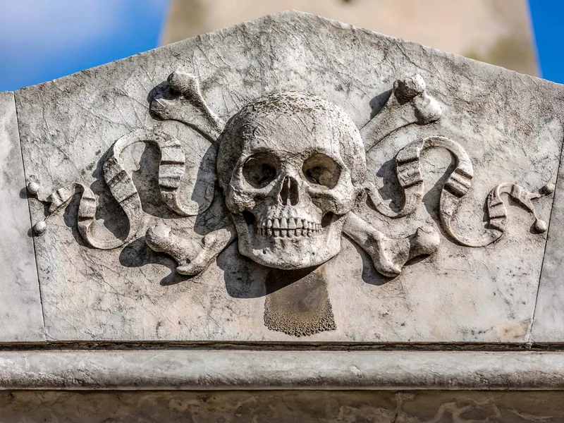

Le cimetière de Recoleta n'a pas de tombes ; il a de l'architecture. Quatre mille cinq cents caveaux familiaux s'alignent le long d'allées pavées comme une ville en miniature — des temples grecs à côté de chapelles gothiques, une jeune fille de marbre à une porte Art nouveau, un bloc d'allure égyptienne des années 1930, des portes de bronze avec des hiboux, des sabliers et des serpents qui se mordent la queue. Rien de tout cela n'est décoratif pour le plaisir. Chaque style a été choisi pour dire quelque chose de la famille, et chaque symbole sculpté est un mot d'une langue que les visiteurs de 1900 lisaient couramment et que nous avons, pour l'essentiel, oubliée.
Cette page est le dictionnaire. Elle couvre les quatre styles que vous croiserez dans chaque allée, les surprises qui cassent le motif, et les symboles des portes — ce que chacun signifie, et où en voir un bon exemple. Ce qu'elle ne fait pas : raconter les histoires des personnes derrière les portes. C'est le travail de l'audioguide TouringBee, 22 étapes sur une carte hors ligne, dont le parcours passe devant la plupart des bâtiments cités ici.
Vous préparez encore toute la visite ? Commencez par notre guide complet du cimetière de Recoleta ; cette page est pour le second regard.
Les styles en bref
| Style | À repérer | Ce que la famille voulait dire | Un bon exemple sur le parcours |
|---|---|---|---|
| Néoclassique | Colonnes, frontons, urnes, symétrie, pierre nue | Vertu civique, ordre, lignée, la république | Le portique d'entrée ; le Panthéon des citoyens méritants |
| Néogothique | Arcs brisés, pinacles, remplages, portes de chapelle | Dévotion, élévation, deuil mis en scène | La chapelle de Liliana Crociati |
| Art nouveau | Vignes, cheveux dénoués, lettres courbes, ferronnerie organique, mosaïque | La vie, la métamorphose, un goût moderne et cosmopolite | Rufina Cambaceres ; le caveau familial de Luis Federico Leloir |
| Art déco | Reliefs géométriques plats, lettrage stylisé, volumes en gradins | Un deuil maîtrisé, moderne ; l'importance publique | Le caveau de Bartolomé Mitre (reconstruit en 1938) |
| Beaux-Arts / éclectique | Coupoles, figures allégoriques, motifs classiques mélangés | La grandeur, l'assurance dynastique | Les grands caveaux des avenues principales |
| Les surprises | Murs en talus, formes pharaoniques ou en gradins préhispaniques | Une modernité qui regardait au-delà de l'Europe | Pastor de Lezica (Art déco égyptisant) ; le caveau Aldao |
Commencez par l'entrée : le cimetière en miniature
Le portique dorique de la rue Junín est la clé de tout ce qui suit. Il date du réaménagement de 1881 signé Juan Antonio Buschiazzo, l'architecte d'origine italienne à qui l'on doit une bonne part du Buenos Aires de la Belle Époque, et il fonctionne comme une façade de temple : symétrie, colonnes, un seuil maîtrisé entre la rue ordinaire et un espace de mémoire. Au-dessus des colonnes, Requiescant in pace — qu'ils reposent en paix. Retournez-vous en sortant et la face intérieure répond : Expectamus Dominum, nous attendons le Seigneur. Entre les deux inscriptions, taillés dans la pierre, se trouvent la plupart des symboles que vous verrez se répéter sur les portes pendant l'heure qui vient : un serpent qui se mord la queue, un sablier ailé, un hibou, le chrisme. Prenez deux minutes ici pour les lire, et le reste du cimetière devient lisible.

Les quatre styles, et comment les distinguer
Néoclassique : la république en pierre
Colonnes, frontons, urnes, symétrie, surfaces austères — le vocabulaire de la Grèce et de Rome, choisi par des familles qui voulaient ressembler aux fondateurs d'une république, ce que beaucoup d'entre elles étaient. Le cimetière a ouvert en 1822 sous le nom de Cementerio del Norte, et ses premiers grands caveaux parlent cette langue. Le Panthéon des citoyens méritants, près de l'entrée, avec sa rangée de présidents et de généraux, en est l'exemple le plus pur ; le monument de Sarmiento, un fût en forme d'obélisque couronné d'un condor, fait de la même idée classique une idée nationale.
Néogothique : la dévotion mise en scène
Arcs brisés, pinacles, remplages, une porte qui ressemble à celle d'une chapelle. Le gothique, c'est la réponse médiévale, chrétienne et sensible à la retenue classique, et à Recoleta c'est souvent le choix d'une tombe bâtie dans le chagrin plutôt que dans l'apparat. L'exemple le plus touchant est moderne : la petite chapelle néogothique que la mère de Liliana Crociati a dessinée en 1970, avec de hautes fenêtres pour que l'intérieur ne soit pas sombre.
Art nouveau : la vie sur une tombe
Vignes, iris, femmes aux cheveux dénoués, lettres qui ondulent comme des tiges, ferronnerie qui pousse plutôt qu'elle ne se tient droite. Vers 1900, le style était moderne, parisien et légèrement scandaleux ; sur une tombe, il dit quelque chose de courageux : que ce dont on se souvient, c'est la vie, la beauté et la métamorphose, pas la mort. La tombe de Rufina Cambaceres en est le chef-d'œuvre — des iris grimpent le long de l'encadrement, une jeune fille se tient à une porte entrouverte — et le caveau de la famille Leloir, construit avant le Nobel de la famille, en est un autre bel exemple.
Art déco : le deuil maîtrisé
Reliefs aplatis, géométrie nette, lettrage stylisé, volumes en gradins, matériaux modernes. Dans les années 1930, les grandes familles voulaient un deuil à l'image du siècle : discipliné, public, presque industriel. Le caveau de Bartolomé Mitre, reconstruit en 1938 avec des allégories du Devoir, de l'Argentine et de la Justice, c'est l'Art déco comme architecture d'État. Comparez-le au condor de Sarmiento, à quelques allées de là : un monument est personnel et romantique, l'autre institutionnel et abstrait, et les deux font de la politique.
Et tout le reste, éclectique
La plupart des grands caveaux des avenues principales mélangent tout : une coupole, une frise grecque, une veuve allégorique, une fenêtre gothique. C'est l'éclectisme Beaux-Arts, le style maison d'une ville qui voulait être Paris et avait les moyens d'importer les sculpteurs. N'essayez pas de dater une tombe à son style : les familles ont reconstruit, réutilisé et commandé des pastiches bien après que la mode était passée. Faites confiance aux inscriptions, pas aux colonnes.

Écoutez les histoires devant les tombes elles-mêmes
22 étapes · ~1 h 30 · carte hors ligne — €9.99, un seul paiement, sans abonnement.
Obtenir l'audioguideLes surprises : l'Égypte et les Amériques
Recoleta devient vraiment intéressant là où le modèle européen se fissure. Le mausolée Pastor de Lezica – Estanislao Peña est de l'Art déco à l'accent égyptien : murs en talus, plans sévères, une masse pharaonique compacte qui réinterprète l'Antiquité plutôt que de la copier. À quelques allées de là, le caveau de la famille Aldao fait quelque chose de plus rare encore : son décor géométrique puise dans les langages visuels préhispaniques — formes en gradins, reliefs abstraits — un rappel que la modernité argentine ne regardait pas seulement vers l'Europe. Aucun des deux n'est sur les avenues principales ; les deux valent le détour, et les deux se trouvent plus facilement avec le parcours qu'avec le plan papier.
Les matériaux : ce que dit la pierre
Le marbre de Carrare disait l'Italie et l'argent ; le granit argentin, la permanence locale ; les portes de bronze et les verres colorés, l'assurance technique. Plafonds de mosaïque, céramique, béton et granit noir poli peuvent se côtoyer à quelques mètres. Regardez à travers la vitre des portes : la façade parle à la rue, l'intérieur à la famille, et le contraste — une façade monumentale, une minuscule chapelle encombrée de photographies — est souvent ce qu'un caveau a de plus humain.
Les symboles : un décodeur pour les portes
| Symbole | Sens | Où en voir un |
|---|---|---|
| Sablier ailé | Le temps s'envole ; la vie est brève ; l'âme s'élève | Le portique ; d'innombrables portes |
| Ouroboros (serpent qui se mord la queue) | L'éternel retour ; le temps sans commencement ni fin | Le portique ; autour des noms et des croix |
| Hibou | Sagesse, vigilance, la nuit contemplative — pas un mauvais présage | Le portique, à côté du sablier |
| Torche renversée | La vie éteinte ; si la flamme brûle encore, c'est l'esprit qui continue | Sur de nombreuses portes de bronze et reliefs |
| Crâne et ossements | Memento mori — souviens-toi que tu mourras | Les caveaux anciens ; voir la photo ci-dessus |
| Couronne | Honneur, victoire, souvenir ; le cercle n'a pas de fin | Tombes de militaires et d'hommes politiques |
| Papillon | La métamorphose ; l'âme libérée | Les portes Art nouveau |
| Fleurs (pavot, lys, rose) | Beauté, fragilité, vie brève — souvent pour des enfants | Partout ; les iris de l'encadrement de Rufina |
| Ancre | L'espérance et la constance — ou simplement la marine | La colonne de l'amiral Brown |
| Condor | Les Andes ; la nation ; l'âme au-dessus des montagnes | Le monument de Sarmiento |
| Balance, tables de la loi | Le droit, la justice, la fonction publique | Caveaux de juristes et de présidents |
| Chrisme (XP) | Monogramme paléochrétien du Christ | Le portique ; portes et grilles |
| Étoile de David | Identité ou héritage juif ; des symboles mêlés peuvent indiquer un mariage mixte ou un caveau qui a changé de famille | Quelques caveaux |
Ne voyez pas des francs-maçons partout. Outils, échelles, clous, lances et figures géométriques se font étiqueter « maçonniques » par des guides pressés. Dans un cadre funéraire catholique, la plupart sont des instruments de la Passion ou des allégories ordinaires. Aucun symbole n'a qu'un seul sens : lisez ses voisins, la date, la biographie. Une ancre sur la colonne de l'amiral Brown, c'est son métier ; une ancre à côté d'une croix, c'est l'espérance chrétienne. Le seul endroit où la franc-maçonnerie a vraiment changé ce cimetière — une inhumation en 1863 qui a mis fin au contrôle de l'Église sur les lieux — est une histoire du parcours audio, racontée devant la porte de la basilique.
Lire une porte en trois symboles
Choisissez un caveau et trouvez-y trois symboles. Assemblez-les en une phrase — « le temps passe, la foi ancre la famille, et la couronne promet l'honneur » — puis vérifiez si l'inscription et les dates la confirment. C'est un jeu, et c'est aussi exactement ce que le sculpteur attendait de vous. Les enfants y excellent ; tout comme ceux à qui l'on a dit que le cimetière, « ce n'est que des tombes ».
De ma propre visite
L'architecture qui m'est restée n'était pas une façade. Par la vitre brisée d'un caveau abandonné, j'ai vu un escalier en colimaçon descendre dans le noir, et des cercueils poussiéreux au niveau inférieur — les caveaux de Recoleta ont deux ou trois niveaux de profondeur, et la façade tape-à-l'œil côté allée n'est que le sommet du bâtiment. Après ça, j'ai lu chaque porte autrement : les sabliers et les torches des grilles ne sont pas un ornement, c'est l'étiquette d'une construction qui continue sous terre. Et il y avait un chat endormi sur le toit du caveau d'en face, que les sculpteurs n'avaient pas prévu, mais auraient dû.
Un mot sur l'art de regarder de près
Lire les portes, c'est se tenir tout près. Ne touchez ni le bronze ni la vitre, ne marchez pas dans les massifs plantés ni par une porte ouverte pour un meilleur angle, et laissez la place quand une famille est en visite. Beaucoup de ces caveaux sont fragiles, plus de quatre-vingt-dix sont classés monuments nationaux, et tous restent privés.
Audioguide du cimetière de RecoletaAccès immédiat
- 100 % hors ligne — ni Wi-Fi ni données mobiles nécessaires dans le cimetière
- Carte hors ligne avec le parcours — vous lancez chaque récit vous-même, devant la tombe
- Langues de l'audio : anglais, espagnol
- Fonctionne sur iOS & Android
- 22 étapes, environ 1 h 30 à votre rythme
À retenir
Quatre styles — classique, gothique, Art nouveau, Art déco — deux surprises venues d'Égypte et des Amériques, et une douzaine de symboles qui se répètent du portique jusqu'aux allées du fond. Apprenez-les à la porte, et le cimetière cesse d'être un labyrinthe de belles pierres pour devenir ce pour quoi il a été bâti : une ville où chaque maison a quelque chose à dire.
L'audioguide passe devant la plupart des bâtiments de cette page et vous dit à qui ils appartiennent : Obtenir l'audioguide — 22 étapes · hors ligne · €9.99
Questions fréquentes
Quels styles architecturaux trouve-t-on au cimetière de Recoleta ?
Quatre principalement : néoclassique (colonnes, frontons, urnes), néogothique (arcs brisés, pinacles), Art nouveau (vignes, cheveux dénoués, ferronnerie organique) et Art déco (reliefs géométriques plats, lettrage stylisé). L'éclectisme Beaux-Arts les mélange, et quelques caveaux empruntent à l'Égypte ancienne ou à l'Amérique préhispanique.
Que signifie le hibou sur une tombe ?
La sagesse, la vigilance et la nuit contemplative — pas un mauvais présage. Il y en a un sur le portique d'entrée lui-même, à côté d'un sablier ailé ; ensemble, ils disent : veillez, et souvenez-vous que le temps est court.
Que signifie le serpent qui se mord la queue ?
L'ouroboros : l'éternel retour, le temps sans commencement ni fin. On le voit sur le portique et sur bien des portes à l'intérieur, le plus souvent autour d'un nom ou d'une croix.
Les symboles sont-ils maçonniques ?
Rarement. Outils, échelles, clous et compas sur des tombes catholiques sont le plus souvent des instruments de la Passion ou des allégories conventionnelles, pas des signes de société secrète. Lisez toute la porte avant d'y voir une loge. La seule vraie histoire maçonnique de Recoleta est le conflit autour d'une inhumation, en 1863, qui a coûté à l'Église le contrôle du cimetière — une étape du parcours audio.
Qui a dessiné l'entrée du cimetière de Recoleta ?
Le portique dorique date du réaménagement de 1881 par Juan Antonio Buschiazzo, l'architecte d'origine italienne qui a façonné une bonne part du Buenos Aires de la Belle Époque. Au-dessus des colonnes : REQUIESCANT IN PACE ; à l'intérieur, face à vous quand vous sortez : EXPECTAMUS DOMINUM.
Le cimetière de Recoleta est-il un monument national ?
Le cimetière compte plus de quatre-vingt-dix caveaux et monuments classés monuments historiques nationaux, et l'ensemble du site est protégé par la Ville. C'est toujours un cimetière en activité : les obsèques passent avant les visites.
Poursuivre la visite
Certains liens de cette page sont des liens d'affiliation (GetYourGuide, Booking.com, TouringBee). Si vous réservez via ces liens, nous pouvons toucher une petite commission — sans surcoût pour vous. Cela n'influence jamais nos recommandations. Voir notre Information sur l'affiliation.